10. Hyperflow Model¶
The hyperflow model on derivation graphs, accessible through
hyperflow::Model (C++) and hyperflow.Model (Python),
consists of a base model and several modules.
Each module defines one or more sets of variables with associated constraints.
If you use the hyperflow functionality in your research you may want to cite [AFMS-Hyperflows]. Results on computational complexity of finding hyperflows can be found in [AFMS-NPFlow].
10.1. Mathematical Description¶
Given is first of all a directed multi-hypergraph (e.g., modelling a chemical
reaction network), in the form of a derivation graph object
(dg::DG/DG).
Let this hypergraph be called \(\mathcal{H} = (V, E)\), with \(V\)
being the set of vertices (e.g., molecules) and \(E\) being the set of
directed hyperedges (e.g., reactions).
As a running example, we use the network below.
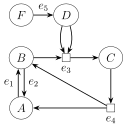
Example of a directed multi-hypergraph.
Each hyperedge \(e\in E\) is an ordered pair of multisets of vertices \(e = (e^{sources}, e^{targets})\), the sources and targets of the edge (e.g., the reactants and products of the reaction). To denote the multiplicity of a vertex \(v\) in a multiset s we write \(m_v(s)\). For example, in the network above, the edge \(e_3 = (\{B, D, D\}, \{C\})\) could model a reaction \(B + 2\,D\rightarrow C\). We have \(m_D(e_3^{sources}) = 2\) as \(D\) is used twice as a reactant. The multiplicity function thus gives the stoichiometric coefficients in a reaction. In the context of stoichiometric matrices the multiplicities for the reactants and products correcpond to the entries of \(\mathbf{S}^-\) and \(\mathbf{S}^+\) respectively.
To model input and output of the network we extend it with half-edges at each vertex, and construct the extended hypergraph: \(\overline{\mathcal{H}} = (V, \overline{E})\), with \(\overline{E} = E\cup E^{in} \cup E^{out}\) where \(E^{in} = \{e^{in}_v = (\emptyset, \{v\}) \mid v\in V\}\) and \(E^{out} = \{e^{out}_v = (\{v\}, \emptyset) \mid v\in V\}\). If we extend our example network we arrive at the extended network shown below.
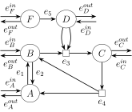
Example of an extended network. Each vertex has an additional input edge and output edge.
10.1.1. Basic Hyperflow Model¶
Given an extended hypergraph \(\overline{\mathcal{H}} = (V, \overline{E})\), an integer hyperflow is a function \(f\colon \overline{E}\rightarrow \mathbb{N}_0\) that assigns a non-negative integer to each hyperedge, including the input/output edges. It must satisfy the flow conservation constraint
where \(\text{out}_{\overline{E}}(v)\) and \(\text{in}_{\overline{E}}(v)\) are the sets of out-edges and in-edges of a vertex \(v\) respectively. An example of an integer hyperflow is shown below.
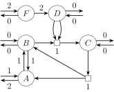
Example of an integer hyperflow on the extended example network.
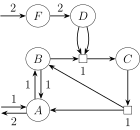
The same integer hyperflow, where edges with no flow are hidden.
10.1.2. Expanded Network and Hyperflow Model¶
For many uses, the basic model described above is sufficient, but often it is advantageous to have more fine-grained control of how flow is routed. The network is therefore transformed further by replacing each vertex with a small network (a complete bipartite graph), such that one can restrict how incomming flow to a vertex is routed to outgoing edges. Formally we create the expanded network \(\widetilde{\mathcal{H}} = (\widetilde{V}, \widetilde{E})\), with
and
That is, each original vertex is replaced with a vertex for each in-edge and for each out-edge of that replaced vertex. The original hyperedges are then reconnected to these new vertices, and a set of new 1-to-1 hyperedges, \(E_v\) are added for each of the original vertices that connect all in-vertices to all out-vertices. We call these new edges transit edges. An example of network expansion is shown below.
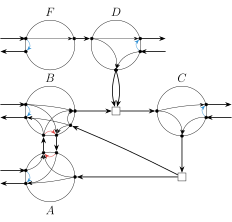
Example of an expanded network. The vertices are the small black dots, while the large circles are a visual aid to group the vertices and edges related to the orignal vertices. The blue transit edges are those that connect the input and output edges, while the red transit edges are those that connect pairs of reverse internal hyperedges.
It will be convenient to specify some particular transit edges:
The IO transit edges \(T_{IO}\) (blue edges in the example above): in each vertex, the transit edge from the input to the output.
The reverse edge transit edges \(T_{rev}\) (red edges in the example blue): in each vertex, the transit edges that go between edges that are reverse of each other. That is, for each pair of hyperedges \(e_1, e_2\in \overline{E}\) with \(e_1 = (V_a, V_b), e_2 = (V_b, V_a)\), each transit edge \((u_{ve_1}^{in}, u_{ve_2}^{out})\) for \(v\in V_b\) and \((u_{ve_2}^{in}, u_{ve_1}^{out})\) for \(v\in V_a\) are in \(T_{rev}\). Note that a loop edge \(e = (V_a, V_a)\) is also considered to be a reverse of it self, and is thus included here.
An integer hyperflow on this expanded network is then defined as before, but just on \(\widetilde{\mathcal{H}}\). A hyperflow on our example of an expanded hypergraph is shown below. When projecting it back on to the non-expanded network, it is equal to the previously shown hyperflow.
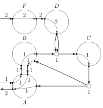
Example of an integer hyperflow on an expanded hypergraph.
10.2. Base Model Specification¶
Hyperflows are found by creating a
hyperflow::Model/hyperflow.Model
object, where a network is given as dg::DG/DG.
The model object contains first a specification of a hyperflow problem,
which can modified, after which one or more hyperflow solutions can be found.
Each solution is a hyperflow \(f\) as mathematically defined in the previous section.
It is represented by a set of variables \(x_e\) for each \(e\in \widetilde{E}\).
Multiple sets of auxiliary variables are defined for convenience,
predominantly indicator variables, i.e., variables of value 0 or 1, that indicate
various conditions.
For example, for each edge of the original network \(e\in E\) there is a
flow variable \(x_e\) and then an indicator variable \(z_e\) that
indicates the condition \(x_e > 0\).
That is, \(z_e\) is 1 if there is non-zero flow on the edge \(e\) and 0
if there is no flow.
An initial model object specifies that nothing can flow in and out of the network,
i.e., \(x_v^{in} = x_v^{out} = 0\) for each vertex \(v\in V\).
To remove this constraint, you can specify a vertex as a source or sink using the methods
hyperflow::Model::addSource()/hyperflow.Model.addSource()
and
hyperflow::Model::addSink()/hyperflow.Model.addSink().
By default a the model does not allowed to have flow on the edges in
\(T_{rev}\) (see the section above), i.e., flow can not go through one edge
and then reversing directly back through the inverse of that edge (unless it is
the input/output edges).
If you want to allow this, you can use
hyperflow::Model::setAllowReversal()/hyperflow.Model.allowReversal.
By default this flow reversal is however allowed for the input/output edges (on
the edges in \(T_{IO}\). This means that if too much flow is going into the
network, it is allowed to flow directly out again.
You can disallow this through
hyperflow::Model::setAllowIOReversal()/hyperflow.Model.allowIOReversal.
For example, consider the left-most flow below.
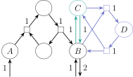 Example of a flow through pairs of reverse edges. In particular, the flow through \(B + C\rightarrow D\) is unambiguously going back through the inverse, \(D\rightarrow B + C\), which often is undesirable. |
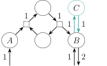 A simplified version of the flow where the flow on the purple edges has been cancelled out. Now the flow through the edge \(B\rightarrow C\) is unambiguously going through the inverse, \(C\rightarrow B\). |
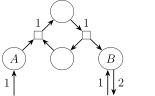 A further simplified version of the flow where also the flow on the green edges has been cancelled out. Now the input flow to \(B\) is unambiguously going back out again. |
A fully simplified version of the flow where also the input/output flow has been cancelled out. |
The network expansion as explained in the previous section introduced many new vertices and transit edges. In the implementation the expansion is only being done as necessary. E.g., if all flow reversal is allowed, then each original vertex will be replaced by just a single transit edge and two vertices. All in-edges are connected to the same new vertex and all out-edges are similarly connected to the other new vertex.
10.2.1. Relaxed Mode¶
The flow function is defined as assigning integers to each hyperedges,
encoding how many times teach edge must be used to achieve balance.
If you want to relaxed the model such that the flow values become floating
point numbers, you can do that through
hyperflow::Model::setRelaxed()/hyperflow.Model.relaxed.
The hyperflow model thus degenerate to be equivalent to the model in Flux
Balance Analysis (FBA).
However, note that many features of the model are disabled in relaxed mode,
e.g., solution enumeration, indicator variables, and several modules,
because they are not well-defined with non-integer hyperflows.
10.3. Variable Specifiers, Linear Expressions, and Constraints¶
The base model does not provide any constraints on the flow apart from which vertices are allowed to have input and output flow, and if allowed, then it is unbounded. The model allows for adding arbitrary linear constraints, but this requires us a way of specifying model variables in C++ and Python. What we will arrive at, is that we can write the following Python code (and a quite similar version can be written in C++).
dg = DG()
r = dg.build().addAbstract("""
#1 A + 2 B -> X
#2 B + 3 C -> Y + A
""")
A = r.getGraph("A")
B = r.getGraph("B")
C = r.getGraph("C")
X = r.getGraph("X")
Y = r.getGraph("Y")
e1 = r.getEdge("1")
e2 = r.getEdge("2")
flow = hyperflow.Model(dg)
flow.addSource(A)
flow.addSource(B)
flow.addSource(C)
flow.addSink(X)
flow.addSink(Y)
flow.addConstraint(inFlow <= 12)
flow.addConstraint(2*edgeFlow[e1] + edgeFlow[e2] <= 3)
flow.objectiveFunction = -2*outFlow[X] - 3*outFlow[Y]
flow.findSolutions(maxNumSolutions=9)
flow.solutions.print()
Here we have a three variable specifiers named:
inFlow, which is used just as it is, thereby representing the sum of all in-flow variables, i.e., \(\sum_{v\in V}x_v^{in}\).edgeFlow, which is indexed by aDG.HyperEdgeobject, in two places, to retrive a variable specifier for the specific edge-flow variable.outFlow, which is similarly used twice to retrieve particular out-flow variables. In this example we index by aGraph, but we could also index with aDG.Vertex.
No matter if a variable specifier is indexed or not, it can be used to create a linear
expression, and they can again be used to create linear constraints.
That is, when using arithmetic and relational operators on these objects, you are not
actually evaluating anything, but merely creating objects that represent those
expressions.
Variable specifiers and linear expressions can also be used to query a found flow
solution, using hyperflow.Solution.eval()/hyperflow::Solution::eval().
10.3.1. Named Variable Specifiers¶
The named variable specifiers are defined both in the Python and C++ interface.
In C++ the variable specifiers are defined in the namespace mod::hyperflow::vars,
it may thus be useful to use the using-declaration
using namespace mod::hyperflow::vars;
when defining linear expressions/constraints.
In Python the variable specifiers are defined in the submodule mod.hyperflow.vars,
but the root module, mod, imports them so they are available directly.
Each defined specifier represents a sum of variables, and indexing the
specifier retrieves a specifier for a single variable (or a sum of a subset of
the variables) as indicated by the argument.
E.g., inFlow represents the sum \(\sum_{v\in V}x^{in}_v\) while
inFlow[a] retrieves the specifier for \(x^{in}_v\) where a is either
the vertex \(v\) or a graph associated with that vertex
in the underlying derivation graph \(\mathcal{H} = (V, E)\).
In the table below, the “Type” column essentially indicates which objects can be used for
indexing. See also the types
hyperflow::VarSumVertex/hyperflow.VarSumVertex
and
hyperflow::VarSumEdge/hyperflow.VarSumEdge.
The “Module” column refers to which part of the flow model the variables are defined in,
with “Base” being the core model.
When a variable specifier is used for specification, e.g., in the objective function or
a constraint, then the corresponding module will automatically be enabled.
Specifier (Python/C++) |
Type |
Module |
Description |
|---|---|---|---|
Vertex |
Base |
The input flow variables, \(x^{in}_v\).
When listing a solution the column header for this variable is |
|
Vertex |
Base |
The output flow variables, \(x^{out}_v\).
When listing a solution the column header for this variable is |
|
Vertex |
Base |
Indicator variables for \(x^{in}_v > 0\). |
|
Vertex |
Base |
Indicator variables for \(x^{out}_v > 0\). |
|
Vertex |
Base |
Indicator variables for \(x^{in}_v < x^{out}_v\). |
|
Vertex |
Base |
Indicator variables for \(x^{in}_v > x^{out}_v\). |
|
Vertex |
Base |
Indicator variables for \(x^{in}_v = x^{out}_v = 0\). |
|
Vertex |
Base |
Variables for flow through each vertex, \(\sum_{v\in V}\sum_{e\in \delta^{in}(v)} x_e\). The indexed variable specifier retrieves the inner sum for some \(v\), \(\sum_{e\in \delta^{in}(v)} x_e\). |
|
Vertex |
Base |
Indicator variables for \(\sum_{e\in \delta^{in}(v)} x_e\). |
|
Vertex |
Base |
Variables for flow through each vertex, which enters and exits the vertex from/to the network.
That is, excluding the flow that is covered by |
|
Edge |
Base |
The edge flow variables, \(x_e\), without the virtual input/output edges. |
|
Edge |
Base |
Indicator variables for \(x_e > 0\) for the non-input/output edges. |
|
Edge |
Base |
For each unique unordered pair of edges (not input/output)
\(e_a = (S_a, T_a), e_b = (T_a, S_a)\) there is an indicator variable indicating
\(x_{e_a} > 0 \wedge x_{e_b} > 0\).
The indexed specifier can only be retrieved if the given
|
|
Vertex |
Indicator variables for overall autocatalysis.
When listing a solution the column header for this variable is |
||
Vertex |
Indicator variables for overall catalysis.
When listing a solution the column header for this variable is |
10.3.2. Linear Expressions¶
When creating a model or querying solutions it can be useful to form linear
expressions or constraints, where variable specifiers acts as the variables.
The operators +, -, and * are overloaded on variable specifiers
and linear expressions (hyperflow.LinExp and hyperflow::LinExp),
such that you can build linear expressions as if they were normal expressions.
Examples:
The variable specifier
inFlowis a linear expression.So is
inFlow[A].The expression
2 * inFlow + edgeFlow[B]is a linear expression.So is
2 * (inFlow + edgeFlow[B]) + outFlow[A].
Generally the following expressions create linear expressions:
A named variable specifier.
An indexed named variable specifier.
Addition or subtraction of two linear expressions.
Multiplication of an integer or floating-point number with a linear expression.
Negation of a linear expression.
A default-constructed
hyperflow.LinExp/hyperflow::LinExprepresents the linear expression of value 0.
The last case can be quite useful if you need to dynamically build a linear expression,
e.g., the sum of all inFlow of vertices satisfying some predicate:
expr = hyperflow.LinExp()
for v in flow.dg.vertices:
if myPredicate(v):
expr += inFlow[v]
10.3.3. Linear Constraints¶
Similar to how linear expressions can be created using ordinary operators, so
can linear constraints.
They are created by using one of the operators ==, <=, and >= with a linear
expression on one side and either an integer or floating-point number on the other side.
The constraints can be pased to
hyperflow.Model.addConstraint()/hyperflow::Model::addConstraint(),
as shown in the example above.
10.4. Objective Function¶
When solutions are found to the specified model, they are enumerated in order of optimality, with respect to the objective function.
It is set by giving a linear expression to hyperflow.Model.objectiveFunction/hyperflow::Model::setObjectiveFunction(),
and a solution is then considered better than another if it has a lower
objective value, i.e., the objective function is minimized by the internal solver.
So, if you want to maximize instead, simply negate your linear expression.
If no objective function is set, a default is determined by the enabled modules. Each module will add some linear expression to the objective function if it is enabled. If the objective function is explicitly specified by the user, it is not modified by the modules.
Module |
Added Linear Expression |
|---|---|
Base |
|
|
|
|
10.5. Extending with Additional Variables¶
The base model and the extension modules each define one or more sets of variables.
You can also extend the model by addding additional variables, either boolean, integer, or floating-point variables.
This is done through
hyperflow.Model.addBoolVariable() / hyperflow::Model::addBoolVariable(),
hyperflow.Model.addIntVariable() / hyperflow::Model::addIntVariable(), and
hyperflow.Model.addFloatVariable() / hyperflow::Model::addFloatVariable(), respectively.
Each of these functions need a unique name for the variable to be created, and will then return a variable specifier
(specifically an object of type hyperflow.VarCustom/hyperflow::VarCustom),
which can then be used as any of the variable specifiers from the built-in modules.
10.6. Overall Autocatalysis Module¶
Access: overallAutocatalysis (Python) / overallAutocatalysis (C++)
If you use the overall autocatalysis module in your research you may want to cite [AFMS-Hyperflows] and [AFMS-Autocata].
This module adds one type of model of autocatalysis which requires a certain relation between the input and output flow, i.e., the model adds a requirement on the overall reaction each flow solution implements.
Specifically, the module introduces the variable specifier isOverallAutocata which represents a set of indicator variables;
\(z^a_v\) for each vertex \(v\in V\).
Each variable is constrained such that \(z^a_v\) is 1 if and only if \(0 < f(e^{in}_v) < f(e^{out}_v)\).
That is, a vertex is considered overall autocatalytic if it has non-zero in-flow, and has greater out-flow than in-flow.
When the module is enabled it will disable reversal of flow through pairs of reverse hyperedges
(hyperflow::Model::setAllowReversal() / hyperflow.Model.allowReversal),
including the IO edges
(hyperflow::Model::setAllowIOReversal() / hyperflow.Model.allowIOReversal).
10.6.1. Breadth-First Exclusivity¶
The core constraints of the module mere requires that some compound is consumed and then produced in a higher quantity. In some cases, this can lead to surprising results, e.g., the one in the figure below.
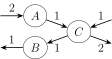
Example of an overall autocatalytic flow which is not really chemicall autocatalytic. The compound \(C\) is the overall autocatalytic because it is put into the network once, and two copies are produced.
One way to rule this flow out is to refine autocatalysis to define that the autocatalytic compound must be exclusively overall autocatalytic, and there can not be a way to create it without it self being put in. That is, let \(F\subseteq V\) be the set of vertices with allowed input flow, then for each \(v\in F\), it is not allowed to be overall autocatalytic if it can be reached by a hyper-breadth-first traversal of the network, starting from \(F\backslash \{v\}\). Equivalently, consider a flow model where all vertices are allowed to have output flow, and only vertices in \(F\backslash \{v\}\) are allowed to have input flow, if there exists a flow which has output flow from \(v\), then \(v\) is not allowed to be overall autocatalytic in the original model.
This pre-computation to disallow vertices to be overall autocatalytic is enabled by default,
but can be disabled with
hyperflow::Model::OverallAutocatalysis::setBFSExclusive() /
hyperflow.Model.OverallAutocatalysis.bfsExclusive,
which, depending on the use-case, in particular is relevant in cases where the
set of source compounds is very large.
Note, the pre-computation is not affected by custom constraints.
If a vertex should not be considered part of the network for this pre-computation,
use hyperflow::Model::exclude() / hyperflow.Model.exclude().
10.6.2. Strict Transit¶
The core constraints of the module mere requires that some compound is consumed and then produced in a higher quantity. However, that does not mean that such a compound can not servce as an intermediary compound as well, which can be considered misleadning. An example of such a flow is shown in the figure below.
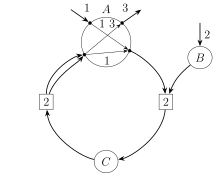
Example of an overall autocatalytic flow where an overall autocatalytic compound is also an intermediary compound. The shown network is the expanded network, and \(A\), is the overall autocatalytic compound. As \(A\) also has transit flow from the network that goes into the network again, it is also an intermediary compound.
We can create a related flow without any network-to-network transit flow by re-routing the transit flow to become input and output instead. This is illustrated in the figure below.
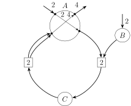
A flow related to the one in the previous figure, with the same edge flow, but without the overall autocatalytic compound \(A\) being an intermediary.
By default the module adds constraints such that if a vertex \(v\in V\) is overall autocatalytic then it can not have any network-to-network transit flow, all flow through \(v\) must come from the input edge or go to the output edge.
The addition of these constraints can be disabled with
hyperflow::Model::OverallAutocatalysis::setStrictTransit() /
hyperflow.Model.OverallAutocatalysis.strictTransit.
10.7. Overall Catalysis Module¶
Access: overallCatalysis (Python) / overallCatalysis (C++)
If you use the overall catalysis module in your research you may want to cite [AFMS-Hyperflows].
This module adds one type of model of catalysis which requires a certain relation between the input and output flow, i.e., the model adds a requirement on the overall reaction each flow solution implements.
Specifically, the module introduces the variable specifier isOverallCata which represents a set of indicator variables;
\(z^c_v\) for each vertex \(v\in V\).
Each variable is constrained such that \(z^c_v\) is 1 if and only if \(0 < f(e^{in}_v) = f(e^{out}_v)\).
That is, a vertex is considered overall atalytic if it has non-zero in-flow, and has the same out-flow as in-flow.
When the module is enabled it will disable reversal of flow through pairs of reverse hyperedges
(hyperflow::Model::setAllowReversal() / hyperflow.Model.allowReversal),
including the IO edges
(hyperflow::Model::setAllowIOReversal() / hyperflow.Model.allowIOReversal).
10.7.1. Strict Transit¶
Similarly to the Overall Autocatalysis Module, this module also has constraints for restricting the transit flow of overall catalytic vertices.
The strict transit constraints are enabled by default, but can be disabled with
hyperflow::Model::OverallCatalysis::setStrictTransit() /
hyperflow.Model.OverallCatalysis.strictTransit.